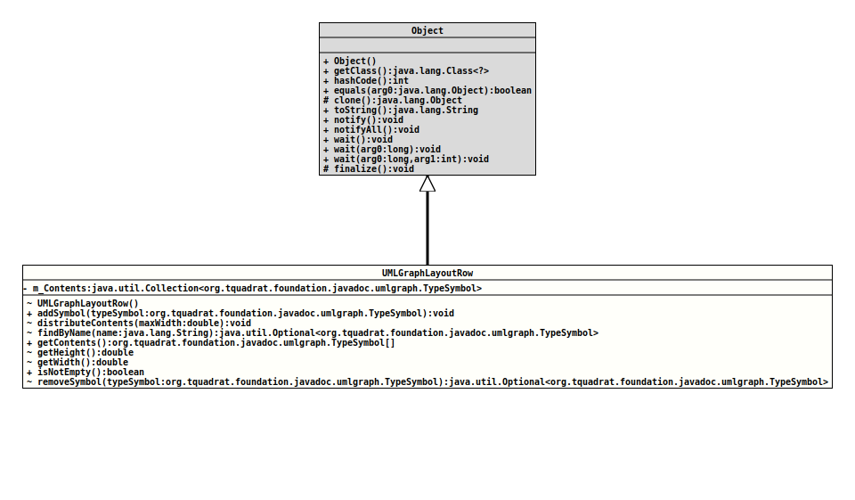

Class UMLGraphLayout.UMLGraphLayoutRow
java.lang.Object
org.tquadrat.foundation.javadoc.umlgraph.UMLGraphLayout.UMLGraphLayoutRow
- Enclosing class:
- UMLGraphLayout
@ClassVersion(sourceVersion="$Id: UMLGraphLayout.java 820 2020-12-29 20:34:22Z tquadrat $")
@API(status=INTERNAL,
since="0.0.5")
public static final class UMLGraphLayout.UMLGraphLayoutRow
extends Object
This class is used to layout the UML graph.
- Author:
- Thomas Thrien (thomas.thrien@tquadrat.org)
- Version:
- $Id: UMLGraphLayout.java 820 2020-12-29 20:34:22Z tquadrat $
- Since:
- 0.0.5
- UML Diagram
-

UML Diagram for "org.tquadrat.foundation.javadoc.umlgraph.UMLGraphLayout.UMLGraphLayoutRow"
{kind=link}
-
Field Summary
Fields -
Constructor Summary
Constructors -
Method Summary
Modifier and TypeMethodDescriptionfinal voidaddSymbol(TypeSymbol typeSymbol) Add an element to this row; this method will not touch the width and height attributes for this row.(package private) final voiddistributeContents(double maxWidth) Distributes the symbols in this row horizontally.(package private) final Optional<TypeSymbol>findByName(String name) Returns the type symbol for the type with the given name.final TypeSymbol[]Returns the UML class doc in this row.(package private) final doubleReturns the minimum height of the row; this is the height of the highest element in the row.(package private) final doublegetWidth()Returns the minimum width of the row; this is calculated as the sum of the width of the elements plus the value ofUMLDocument.SVG_ELEMENT_SPACING(50.0) for each gap (with the gaps before the first and after the last do have half the size).final booleanChecks if elements were added to this row.(package private) final Optional<TypeSymbol>removeSymbol(TypeSymbol typeSymbol) Removes the given type symbol from the contents of this row.
-
Field Details
-
m_Contents
The content of this row.
-
-
Constructor Details
-
UMLGraphLayoutRow
Creates a newUMLGraphLayoutRowobject.
-
-
Method Details
-
addSymbol
Add an element to this row; this method will not touch the width and height attributes for this row.- Parameters:
typeSymbol- The new symbol.
-
distributeContents
Distributes the symbols in this row horizontally.- Parameters:
maxWidth- The maximum width of the row.
-
findByName
Returns the type symbol for the type with the given name.- Parameters:
name- The name for the element.- Returns:
- An instance of
Optionalthat holds the desired type symbol.
-
getContents
Returns the UML class doc in this row.- Returns:
- The contents of this row.
-
getHeight
Returns the minimum height of the row; this is the height of the highest element in the row.- Returns:
- The height.
-
getWidth
Returns the minimum width of the row; this is calculated as the sum of the width of the elements plus the value ofUMLDocument.SVG_ELEMENT_SPACING(50.0) for each gap (with the gaps before the first and after the last do have half the size).- Returns:
- The width.
-
isNotEmpty
Checks if elements were added to this row.- Returns:
trueif the row has elements,falseotherwise.
-
removeSymbol
Removes the given type symbol from the contents of this row.- Parameters:
typeSymbol- The symbol for the type element to remove.- Returns:
- An instance of
Optionalthat holds the removed type symbol.
-